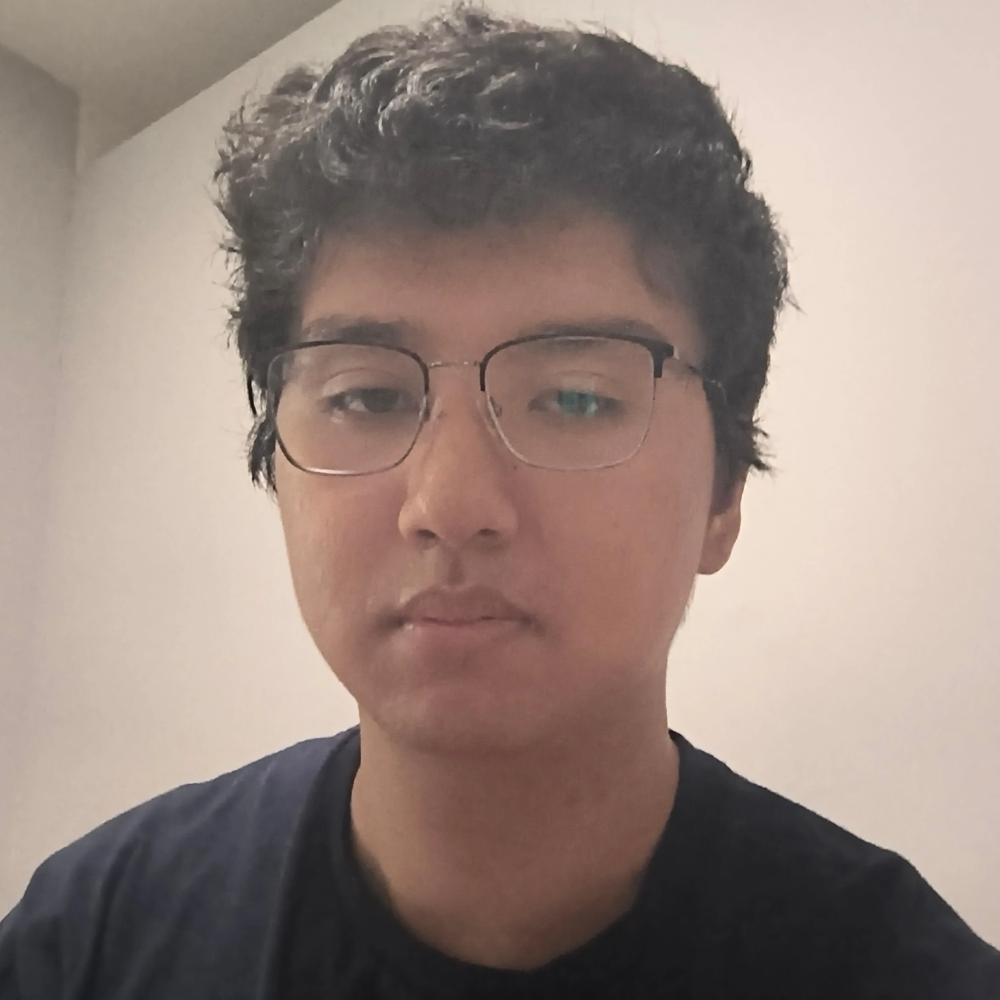

Anteater Linux User Group at UC Irvine (ALUG@UCI) is a student
organization dedicated to bringing users of Linux and open source
software together on campus. We welcome everyone at UCI of all backgrounds and experience
levels to join us in learning, sharing, and collaborating on all things
Linux!
Meet the Team

Name: Chris Rios
Role: Founder & President
Major: Computer Science B.S.
Preferred Distro: CachyOS
Device(s): System76 Adder WS & Steam Deck
Fun Fact: I was born left-handed, but raised right-handed
Name: Kasra Moayedi
Role: Vice President & Event Coordinator
Major: Computer Science and Engineering B.S.
Preferred Distro: CachyOS
Device(s): PC & Thinkpad
Fun Fact: I once hopped between 3 different distros in one night before landing on EndeavourOS!
Name: Andy Teh
Role: Secretary
Major: Computer Science B.S.
Preferred Distro: Fedora
Device(s): IdeaPad Slim 3 14IAN8 & MacBookPro11,1
Fun Fact: I use ChromeOS
Name: Ashley Pock
Role: Treasurer
Major: Computer Science and Engineering B.S.
Preferred Distro: Ubuntu (WSL)
Device(s): Thinkpad & Netbook
Fun Fact: I enjoy learning about the stock market
Name: Jonas Smith
Role: Public Relations
Major: Material Science and Engineering B.S.
Preferred Distro: None in particular
Device(s): Thinkpad with Lubuntu & MSI with Fedora
Fun Fact: I like to cook in my free time and I really like cooking chicken
Name: Ikechi Ezekwe
Role: Historian
Major: Electrical Engineering, B.S.
Preferred Distro: Arch Linux
Device(s): Thinkpad X1 Nano Gen 1 with Arch Linux (Sway as my WM)
Fun Fact: I'm a huge rhythm gamer with my favorite being sound voltex (｡•̀ᴗ-)✧